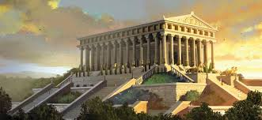

Az ephoszi Artemisz-templom
Artemisz templomát Diana templomaként is ismerhetjük, mivel a görög Artemisz istennő római megfelelője Diana, Zeusz és Létó gyermeke, Apollón ikertestvére a görög mitológiában. Artemisz a Hold és a vadászat szűz istennője, akinek az ókori görög templomot felajánlották. A templom Kr. e. 550 körül épült Epheszoszban a Perzsa Birodalom, a mai Törökország területén. Az 51 méter széles és 105 méter hosszúságú templomot 120 évig építették. A munkálatok Kr. e. 550 körül kezdődtek, a tervezőmérnök Khersziphrón és annak a fia Metagenész volt. Az alapozására különös gondot fordítottak, ugyanis ezen a vidéken igen gyakoriak voltak a földrengések, ezért egy lágy talajú vidéken jelölték ki a templom helyét. Az épület gyorsan turisztikai attrakcióvá vált: számos király, kereskedő, zarándok látogatta meg és hozott különféle ajándékokat a templomnak. Artemisz temploma igazán impozáns látványt nyújthatott 127, egyenként 18 méter magas márványoszlopával, melyek a tetőszerkezetet tartották. Utóbbit cédrusfából, míg a szentély magas, arannyal és drága festékekkel dúsan feldíszített, csiszolt szárnyas ajtajait ciprusfából készítették. A szentély belsejében helyezkedett el az istennő két méteres, fából faragott szobra, amit arannyal és ezüsttel borítottak.
Sajnos a templom Kr. e. 356. július 21-én teljesen elpusztult egyetlen éjszaka alatt. Egy Hérosztratosz nevű ember gyújtotta fel a templomot, aki tettét azzal indokolta, hogy be akart kerülni a történelemkönyvekbe. Az ephészoszi hatóságok ezért nem csak halálra ítélték, de kivégzése után a nevének említését is megtiltották, halálbüntetés terhe mellett, hogy esetleges követőinek elvegyék a kedvét a hasonló próbálkozásoktól. Kr. e. 334-ben Nagy Sándor felajánlotta az epheszosziaknak, hogy újjáépítteti a templomot saját költségén, ha a nevét feltüntetik a templom egyik falán. Az epheszosziak visszautasították Nagy Sándor aranyát és saját költségükből építették fel az új templomot, szebbre, nagyobbra, mint az eredetit. Ezt Deinokratész tervezte és építette.Amikor Epheszosz városa a Római Birodalom fennhatósága alá került, a rómaiak nem rombolták le a szentélyt, mert Artemisz istennőt Diana istennővel azonosították. Az épület végnapjai a Kr. u. 262-ik esztendőben erre vonuló gót hordák megjelenésével kezdődtek. Előbb kifosztották, majd lerombolták a csodás épületet, és a kereszténység államvallássá válása után végleg elveszítette jelentőségét. Az építmény köveit a környék építkezéseire hordták. Mára a templom alapjának néhány kőtömbje és egyetlen helyreállított oszlop maradt fenn.